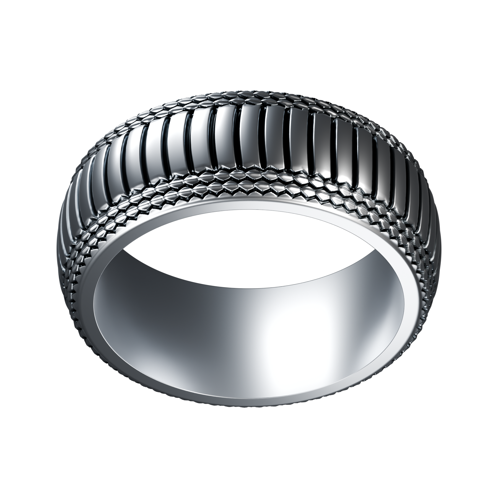
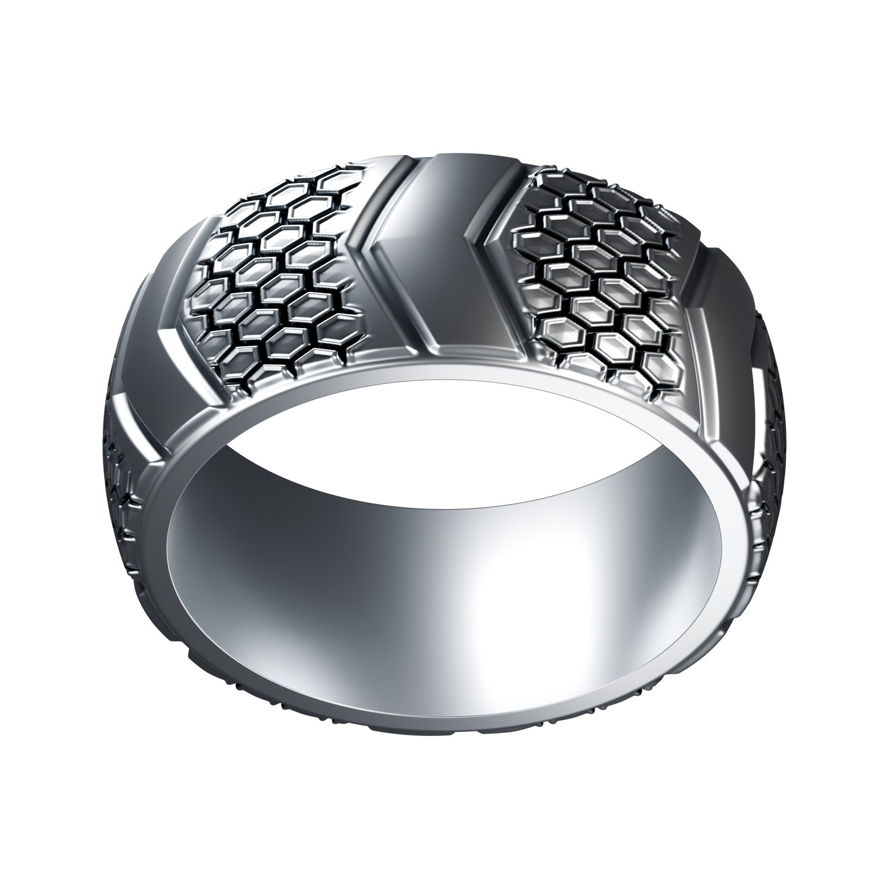
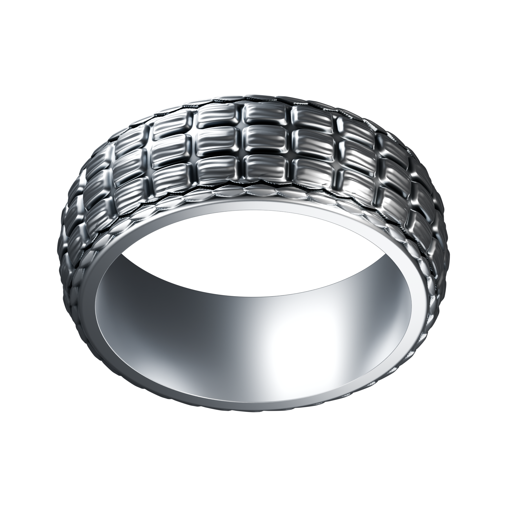
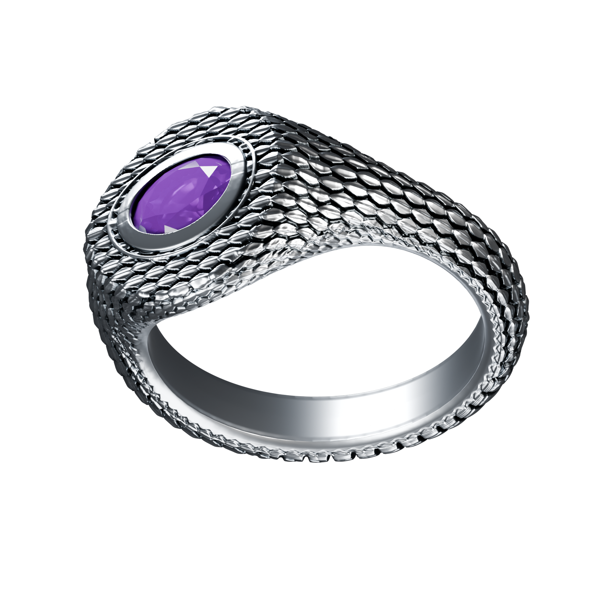
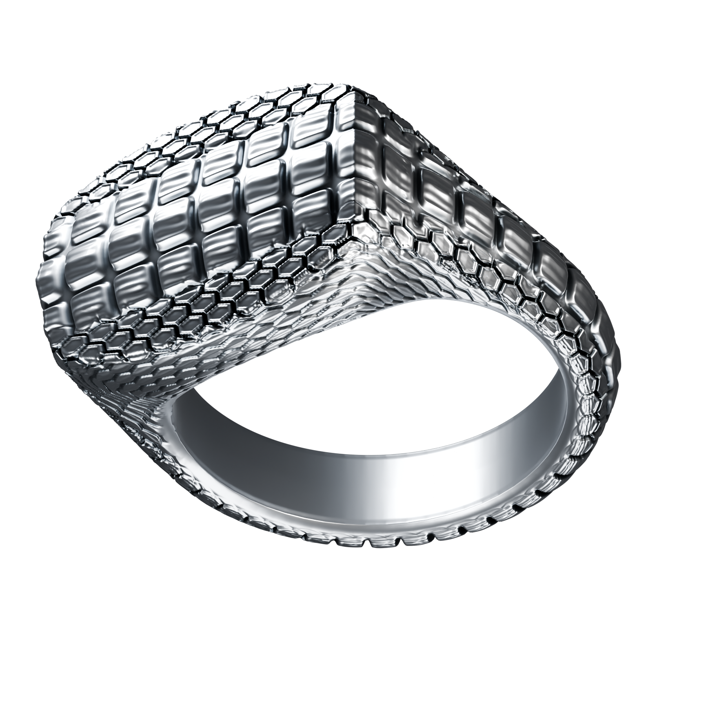

 PortraitClose-upPalm 01 / REPTILIAEcdysisVentral scalesBroad, bowed belly plates meet rows of fine keeled scales.8.5 mm band Download render ↗Openable design + graph ↗
 PortraitClose-upPalm 02 / REPTILIATesseraShield mosaicHexagonal shields merge into broad chevrons around the band.9 mm band Download render ↗Openable design + graph ↗
 PortraitClose-upPalm 03 / REPTILIALoricaCrocodile armourRectangular osteoderms carry low dorsal keels and a fine grain.8 mm band Download render ↗Openable design + graph ↗
 PortraitClose-upPalm 04 / REPTILIAOphidianAmethyst serpentA purple oval sits within a continuous serpent skin, from the face to the palm.Factory signet 013 · 7 × 5 mm amethyst Download render ↗Openable design + graph ↗
 PortraitClose-upPalm 05 / REPTILIAVaranusSovereign scalesA broad shield crown grades into smaller scales along the shoulders and cheeks.Factory signet 017 · patterned face Download render ↗Openable design + graph ↗